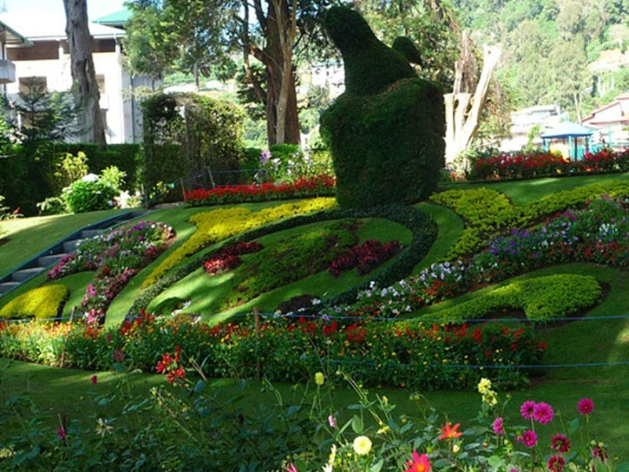
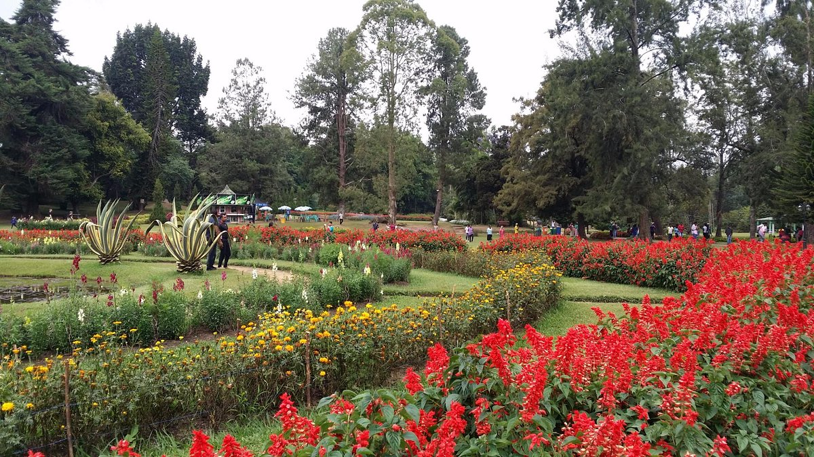
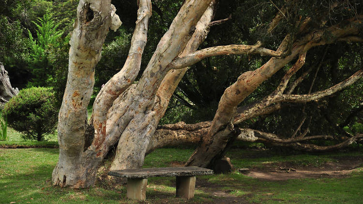
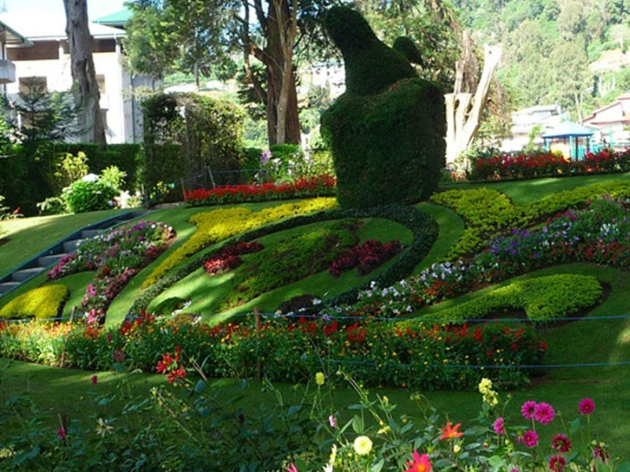
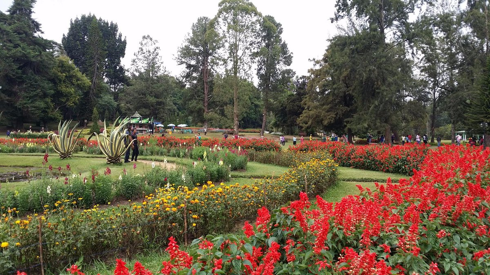
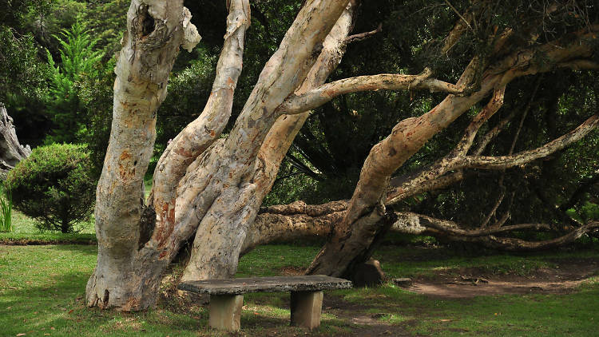
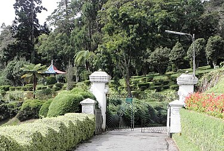
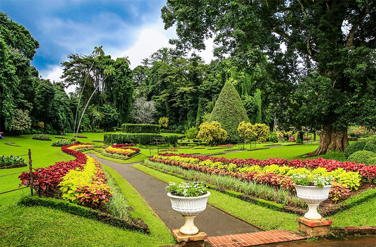
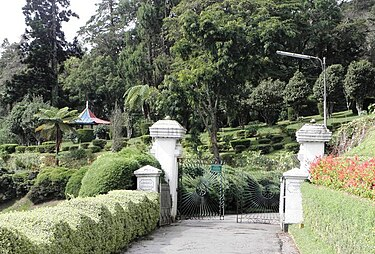
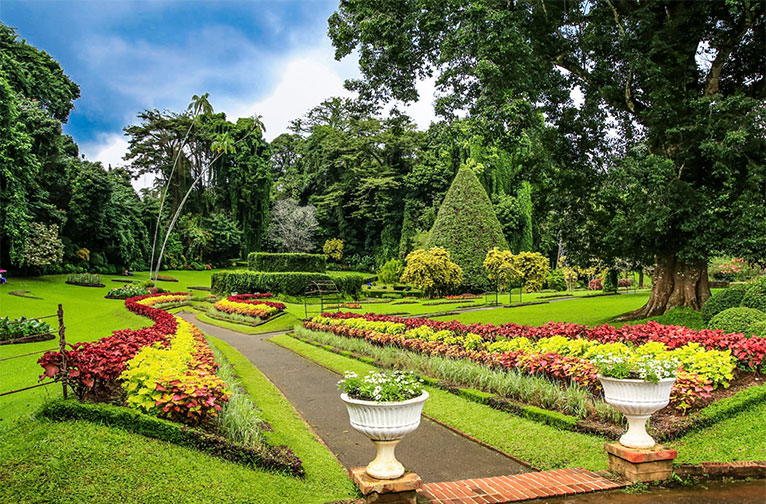

1. Peradeniya Botenical Garden
The Peradeniya Botanic Garden, also known as the Royal Botanic Gardens, is located in Peradeniya, Kandy district. It covers a total area of 147 acres (0.59 km2) and is situated near the Mahaweli river. The garden is home to over 4000 species of plants, including orchids, spices, medicinal plants, and palm trees. It is an ideal destination for families, couples, and educational outings.
 





2. Victoria Garden
The Victoria Park, located in the Nuwara-Eliya district, is a picturesque botanical garden spanning 27 acres. Originally utilized as the research field of the Hakgala Botanical Garden, it was named after Queen Victoria of the United Kingdom. The park boasts a splendid array of flowers that are in full bloom during March, April, May, August, and September. The park is open to the public from 7:00 am to 6:00 pm.
 



3. Haggala Botenical Garden
Hakgala Rock is located in the Central Highlands of Sri Lanka and covers an area of about 28 hectares. The optimal period to visit the gardens is from mid-March to the end of April.
4. Gregory Lake Park
Lake Gregory Park, located in Nuwara Eliya, is named after Sir William Gregory and was constructed in 1973. This park offers a variety of water activities and is an ideal location for family picnics. The best time to visit is from February to May.